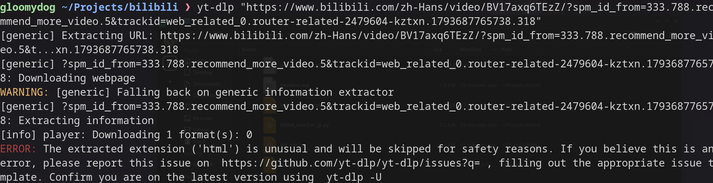
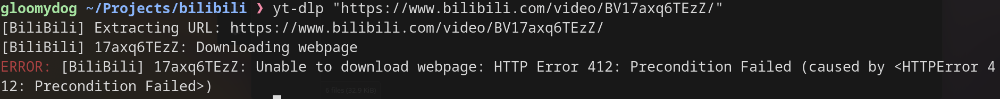
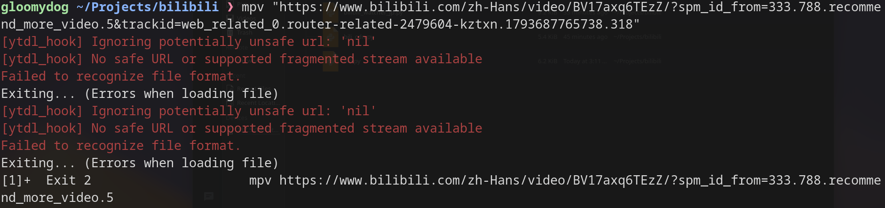
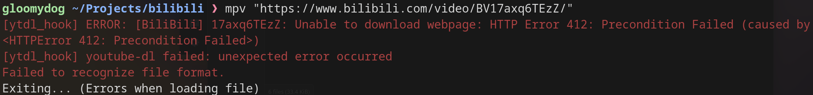
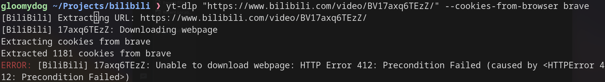
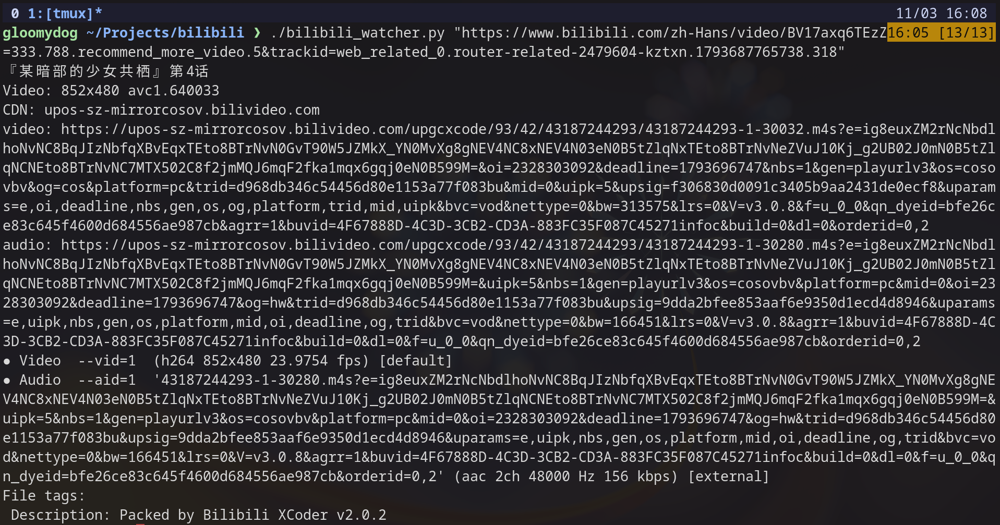
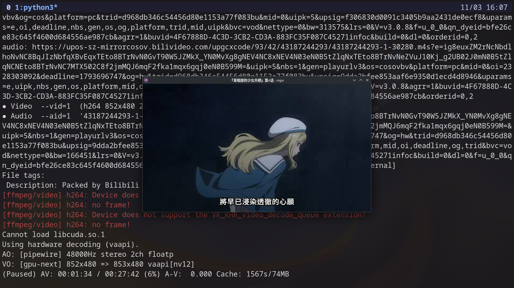
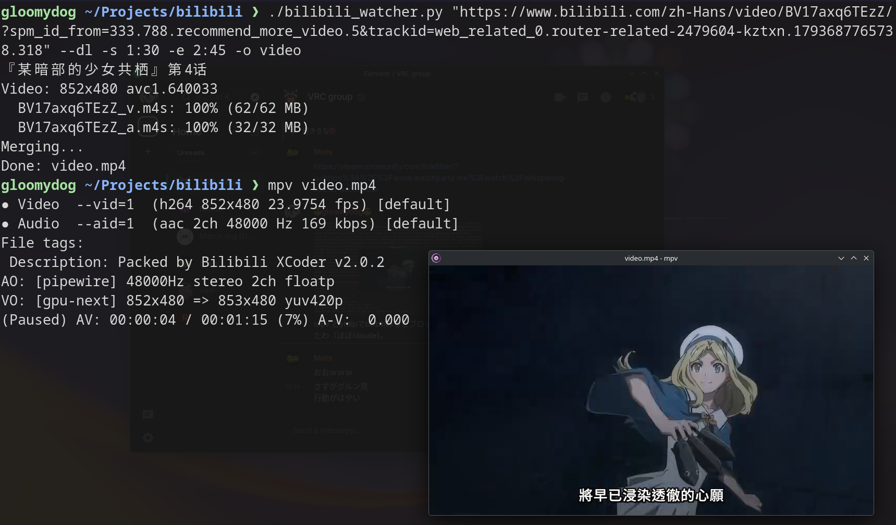

How to get around Bilibili's anti-bot protection to play and download videos
I usually use yt-dlp to download videos and music from YouTube and mpv to watch them. When I tried the same tools on Bilibili, its anti-bot protection rejected every request.
In this article, I show you how to overcome this issue by writing a Python script.
yt-dlp fails on Bilibili
Suppose you want to download the video at this URL, copied straight from the browser's address bar:
https://www.bilibili.com/zh-Hans/video/BV17axq6TEzZ/?spm_id_from=333.788.recommend_more_video.5&trackid=web_related_0.router-related-2479604-kztxn.1793687765738.318First, try passing it to yt-dlp as is:
yt-dlp "https://www.bilibili.com/zh-Hans/video/BV17axq6TEzZ/?spm_id_from=333.788.recommend_more_video.5&trackid=web_related_0.router-related-2479604-kztxn.1793687765738.318"
It fails because yt-dlp does not recognize this URL format. Two things get in the way: the /zh-Hans/ language prefix and the & in the query string.
Remove /zh-Hans/ and everything after the BV number, then try again:
yt-dlp "https://www.bilibili.com/video/BV17axq6TEzZ/"
It fails again. This time yt-dlp does recognize the URL, but Bilibili responds with HTTP 412 Precondition Failed. That is its anti-bot protection refusing the request.
mpv fails too
I saw the same problem with mpv:
mpv "https://www.bilibili.com/zh-Hans/video/BV17axq6TEzZ/?spm_id_from=333.788.recommend_more_video.5&trackid=web_related_0.router-related-2479604-kztxn.1793687765738.318"
mpv "https://www.bilibili.com/video/BV17axq6TEzZ/"
The errors match the yt-dlp ones. mpv cannot parse video websites by itself. When you give it a web page URL, its built-in ytdl_hook script calls yt-dlp in the background to find the real video URL. You can see [ytdl_hook] in front of the error messages.
How yt-dlp works, and why it gets blocked
yt-dlp first downloads the video's HTML page and extracts the video information embedded in it. That HTML page is where Bilibili's anti-bot protection is strictest. It checks things like the User-Agent, cookies, and even the TLS fingerprint of the client, and it rejects anything that does not look like a real browser.
The usual workaround is to hand your browser's cookies to yt-dlp, and yt-dlp has an option for exactly that:
yt-dlp --cookies-from-browser brave "https://www.bilibili.com/video/BV17axq6TEzZ/"
But it failed. :( The bot rejected my request again.
The problem is clear: the bot blocks my requests to the HTML page. The way around it is to not fetch the HTML page at all.
Alternative: call the APIs directly
I (mostly Claude Opus 5.5) wrote a Python script, bilibili_watcher.py (see my GitHub, or the full code at the end of this article), that plays and downloads Bilibili videos without going through the HTML page.
The browser's video player doesn't actually read the video URL from the HTML either. It calls JSON APIs in the background. The script does the same. It gets the cookies Bilibili expects from an API, then calls the JSON APIs that return the video information and stream URLs, with the signature Bilibili requires.
I tested my script, and it worked.
To play:
./bilibili_watcher.py "https://www.bilibili.com/zh-Hans/video/BV17axq6TEzZ/?spm_id_from=333.788.recommend_more_video.5&trackid=web_related_0.router-related-2479604-kztxn.1793687765738.318"

To download:
./bilibili_watcher.py "https://www.bilibili.com/zh-Hans/video/BV17axq6TEzZ/?spm_id_from=333.788.recommend_more_video.5&trackid=web_related_0.router-related-2479604-kztxn.1793687765738.318" --dl -s 1:30 -e 2:45 -o video
Here are the details of my script, step by step.
- Extract the BV number with a regular expression. You can paste the URL exactly as copied from the browser,
/zh-Hans/and tracking parameters included. - Get device cookies. It calls
/x/frontend/finger/spito getbuvid3andbuvid4. Bilibili uses these cookies to identify the device and decide whether the client is a bot. Without them, you are much more likely to get a 412. - Get the cid. It calls the view API with the BV number to get the video title and its cid, the ID of the actual video stream. The cid is required to request the stream URLs.
- Sign the request (WBI). The API that returns stream URLs rejects unsigned requests. The script fetches two daily-rotating keys from
/nav, scrambles them with a fixed permutation table into a 32-character key, adds a timestamp (wts) to the parameters, and appendsw_rid, an MD5 hash of the sorted parameters plus the key. - Get the stream URLs. It calls the playurl API and requests DASH format. Bilibili serves video and audio as separate
.m4sfiles, and the response lists every quality level. The script picks the best video and the best audio. - Choose a reliable CDN. Akamai and mcdn (a peer-assisted CDN) hosts tend to drop the connection mid-stream. In my first attempt, the audio cut out after about five seconds. The script prefers
upos-sz-*.bilivideo.comas the main host and rewrites the host name if no good one is offered. - Play with mpv. It passes the video URL to mpv and the audio URL with
--audio-file, so mpv plays both together without any merging. It also sendsReferer: https://www.bilibili.com/, because the CDN returns 403 without it. Since these are direct media URLs, mpv doesn't call yt-dlp at all.
To download, the script fetches both .m4s files in a single request each and merges them into an mp4 with ffmpeg -c copy. That repackages the streams without re-encoding, so it is fast and keeps the original quality.
Source code
#!/usr/bin/env python3
"""bilibili_watcher: play Bilibili videos directly from the CDN with mpv, or save them as mp4.
Play (default):
./bilibili_watcher.py "https://www.bilibili.com/video/BVxxxx/"
./bilibili_watcher.py URL -s 1:30 -e 2:45 # play a section
./bilibili_watcher.py URL --print # print stream URLs only
./bilibili_watcher.py URL -- --fullscreen # args after -- go to mpv
Save (--dl):
./bilibili_watcher.py URL --dl # <title>.mp4
./bilibili_watcher.py URL --dl -s 1:30 -e 2:45 -o clip
./bilibili_watcher.py URL --dl -d ~/Videos
./bilibili_watcher.py URL --dl -s 1:30 -e 2:45 --precise # frame-accurate cut (re-encode)
Common:
--sessdata XXXX login cookie for higher quality (or env BILI_SESSDATA)
--cdn HOST force CDN host, e.g. upos-sz-mirrorali.bilivideo.com
"""
import argparse, hashlib, os, re, shutil, subprocess, sys, time, urllib.parse
import requests
UA = ("Mozilla/5.0 (X11; Linux x86_64) AppleWebKit/537.36 "
"(KHTML, like Gecko) Chrome/130.0.0.0 Safari/537.36")
REFERER = "https://www.bilibili.com/"
# Permutation table for WBI signing
TAB = [46,47,18,2,53,8,23,32,15,50,10,31,58,3,45,35,27,43,5,49,33,9,42,19,29,28,14,39,
12,38,41,13,37,48,7,16,24,55,40,61,26,17,0,1,60,51,30,4,22,25,54,21,56,59,6,63,
57,62,11,36,20,34,44,52]
s = requests.Session()
s.headers.update({"User-Agent": UA, "Referer": REFERER,
"Origin": "https://www.bilibili.com"})
# ---------- API ----------
def api(url, params=None):
r = s.get(url, params=params, timeout=15)
r.raise_for_status()
j = r.json()
if j.get("code") != 0:
sys.exit(f"API error {j.get('code')}: {j.get('message')} ({url})")
return j["data"]
def init_cookies(sessdata):
# buvid3/buvid4 device cookies help avoid HTTP 412 (anti-bot)
try:
d = api("https://api.bilibili.com/x/frontend/finger/spi")
s.cookies.set("buvid3", d["b_3"], domain=".bilibili.com")
s.cookies.set("buvid4", d["b_4"], domain=".bilibili.com")
except Exception:
pass
if sessdata:
s.cookies.set("SESSDATA", sessdata, domain=".bilibili.com")
def wbi_sign(params):
# Sign query params with WBI (required by the playurl API)
img = s.get("https://api.bilibili.com/x/web-interface/nav", timeout=15).json()["data"]["wbi_img"]
key = (img["img_url"].rsplit("/", 1)[1].split(".")[0] +
img["sub_url"].rsplit("/", 1)[1].split(".")[0])
mixin = "".join(key[i] for i in TAB)[:32]
params = dict(params, wts=int(time.time()))
params = {k: re.sub(r"[!'()*]", "", str(v)) for k, v in sorted(params.items())}
params["w_rid"] = hashlib.md5((urllib.parse.urlencode(params) + mixin).encode()).hexdigest()
return params
def get_streams(url, sessdata):
m = re.search(r"(BV[0-9A-Za-z]{10})", url)
if not m:
sys.exit("No BV id found in URL")
bvid = m.group(1)
pm = re.search(r"[?&]p=(\d+)", url)
page = int(pm.group(1)) if pm else 1
init_cookies(sessdata)
info = api("https://api.bilibili.com/x/web-interface/view", {"bvid": bvid})
cid = info["pages"][page - 1]["cid"]
multi = len(info["pages"]) > 1
d = api("https://api.bilibili.com/x/player/wbi/playurl",
wbi_sign({"bvid": bvid, "cid": cid, "qn": 127, "fnval": 4048,
"fnver": 0, "fourk": 1}))
dash = d.get("dash")
if not dash:
sys.exit("No DASH stream (members-only or region-locked?)")
# Highest quality first; prefer AVC (codecid 7) on ties
v = sorted(dash["video"], key=lambda x: (x["id"], x["codecid"] == 7, x["bandwidth"]),
reverse=True)[0]
au = sorted(dash.get("audio") or [], key=lambda x: x["bandwidth"], reverse=True)
return {
"bvid": bvid,
"title": info["title"] + (f" (p{page})" if multi else ""),
"file_title": re.sub(r'[\\/:*?"<>|]', "_", info["title"]) + (f"_p{page}" if multi else ""),
"video": v,
"audio": au[0] if au else None,
}
# ---------- CDN ----------
def _bad_host(h):
# Akamai / mcdn (PCDN) / IP hosts tend to drop connections mid-stream
return ("akamaized" in h) or ("mcdn" in h) or ("szbdyd" in h) or h[:1].isdigit()
def candidate_urls(stream, cdn_host):
"""Return stream URLs ordered from most to least reliable CDN."""
cands = [stream["baseUrl"]] + (stream.get("backupUrl") or [])
if cdn_host:
u = urllib.parse.urlsplit(cands[0])
return [u._replace(netloc=cdn_host).geturl()] + cands
cands.sort(key=lambda u: (not _bad_host(urllib.parse.urlsplit(u).netloc),
"upos-sz" in u), reverse=True)
if _bad_host(urllib.parse.urlsplit(cands[0]).netloc):
# No good host available: rewrite to the official upos mirror
u = urllib.parse.urlsplit(cands[0])
cands.insert(0, u._replace(netloc="upos-sz-mirrorcos.bilivideo.com").geturl())
return cands
# ---------- Play ----------
def play(info, a):
vurl = candidate_urls(info["video"], a.cdn)[0]
aurl = candidate_urls(info["audio"], a.cdn)[0] if info["audio"] else None
print("CDN: " + urllib.parse.urlsplit(vurl).netloc)
print(f"video: {vurl}")
if aurl:
print(f"audio: {aurl}")
if a.print:
return
mpv = shutil.which("mpv")
if not mpv:
sys.exit("mpv not found (e.g. sudo apt install mpv)")
cmd = [mpv, f"--referrer={REFERER}", f"--user-agent={UA}",
f"--force-media-title={info['title']}",
"--hwdec=auto-safe",
# Reconnect on drop (also applies to the external audio file)
"--stream-lavf-o=reconnect=1,reconnect_streamed=1,reconnect_delay_max=5",
# Large read-ahead so the small audio stream is buffered early
"--cache=yes", "--demuxer-max-bytes=200MiB", vurl]
if aurl:
cmd.append(f"--audio-file={aurl}")
if a.start:
cmd.append(f"--start={a.start}")
if a.end:
cmd.append(f"--end={a.end}")
cmd += a.mpv_args
subprocess.run(cmd)
# ---------- Save ----------
def fetch(urls, path):
# Try each URL in order until one downloads completely
for u in urls:
try:
with s.get(u, stream=True, timeout=30) as r:
r.raise_for_status()
total = int(r.headers.get("content-length", 0))
done = 0
with open(path, "wb") as f:
for chunk in r.iter_content(1 << 20):
f.write(chunk)
done += len(chunk)
if total:
print(f"\r {os.path.basename(path)}: {done*100//total}% "
f"({done>>20}/{total>>20} MB)", end="", flush=True)
if total and done < total:
raise IOError(f"connection dropped ({done}/{total})")
print()
return
except Exception as e:
print(f"\n failed, trying next URL: {e}")
sys.exit(f"Download failed: {path}")
def download(info, a):
if not shutil.which("ffmpeg"):
sys.exit("ffmpeg not found")
if a.output:
out = os.path.expanduser(a.output)
if not os.path.splitext(out)[1]:
out += ".mp4"
else:
suffix = ""
if a.start or a.end:
suffix = f"_{(a.start or '0')}-{(a.end or 'end')}".replace(":", ".")
out = os.path.join(os.path.expanduser(a.outdir), f"{info['file_title']}{suffix}.mp4")
workdir = os.path.dirname(out) or "."
os.makedirs(workdir, exist_ok=True)
vp = os.path.join(workdir, f"{info['bvid']}_v.m4s")
apth = os.path.join(workdir, f"{info['bvid']}_a.m4s")
# Trim options, applied to each input
trim = (["-ss", a.start] if a.start else []) + (["-to", a.end] if a.end else [])
fetch(candidate_urls(info["video"], a.cdn), vp)
cmd = ["ffmpeg", "-y", "-loglevel", "error", *trim, "-i", vp]
if info["audio"]:
fetch(candidate_urls(info["audio"], a.cdn), apth)
cmd += [*trim, "-i", apth]
if trim and a.precise:
cmd += ["-c:v", "libx264", "-crf", "18", "-preset", "veryfast", "-c:a", "aac"]
else:
cmd += ["-c", "copy"] # no re-encode: fast, cut snaps to keyframes
cmd += ["-map", "0:v:0"] + (["-map", "1:a:0"] if info["audio"] else []) + [out]
print("Merging...")
subprocess.run(cmd, check=True)
os.remove(vp)
if info["audio"]:
os.remove(apth)
print(f"Done: {out}")
# ---------- main ----------
def main():
ap = argparse.ArgumentParser(description="Play Bilibili with mpv / save as mp4")
ap.add_argument("url")
ap.add_argument("--dl", action="store_true", help="save as mp4 instead of playing")
ap.add_argument("-s", "--start", help="start time, e.g. 90 / 1:30 / 00:01:30.5")
ap.add_argument("-e", "--end", help="end time, e.g. 2:45")
ap.add_argument("--sessdata", default=os.environ.get("BILI_SESSDATA"),
help="SESSDATA login cookie for higher quality")
ap.add_argument("--cdn", help="force CDN host, e.g. upos-sz-mirrorali.bilivideo.com")
g = ap.add_argument_group("play")
g.add_argument("--print", action="store_true", help="print stream URLs without playing")
g.add_argument("mpv_args", nargs="*", help="extra mpv args (after --)")
g = ap.add_argument_group("save (--dl)")
g.add_argument("-o", "--output", help="output file, e.g. clip / ~/Videos/clip.mp4")
g.add_argument("-d", "--outdir", default=".", help="output folder (when -o is not given)")
g.add_argument("--precise", action="store_true", help="frame-accurate cut by re-encoding (slow)")
a = ap.parse_args()
info = get_streams(a.url, a.sessdata)
v = info["video"]
print(f"{info['title']}\nVideo: {v['width']}x{v['height']} {v['codecs']}")
if a.dl:
download(info, a)
else:
play(info, a)
if __name__ == "__main__":
main()